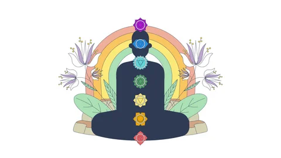
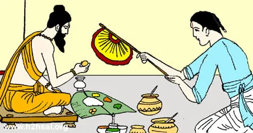

Deepen your practice with our curated collection of guides, tutorials, and inspirational content
Wellness Blog
Explore our collection of articles covering yoga techniques, meditation practices, wellness tips, and lifestyle advice to enhance your daily routine.
Master breathing for Kathmandu's high altitude wellness
Breathing Techniques for High Altitude Wellness
📅 January 15, 2026⏱️ 4 min read
Living or practicing yoga at Kathmandu's 1,338m elevation requires special breathing techniques. Discover pranayama methods specifically adapted for high altitude living, helping you optimize oxygen absorption, reduce altitude effects, and enhance meditation depth.
Nepal's unique position in the Himalayas shapes our yoga tradition. Learn how mountain energy influences our practice, from the grounding power of the peaks to the spiritual significance of practicing yoga where Buddha walked. Discover poses inspired by our sacred landscape.
Inspired by Buddha's birthplace in Lumbini, Nepal, these mindfulness practices root you in Buddhist traditions. Learn meditation techniques developed over millennia in Nepal's temples and monasteries, perfect for modern practice and inner peace.
Read More

Traditional Alignment: Himalayan Yoga Method
Himalayan Traditional Yoga: Proper Alignment Guide
📅 December 28, 2025⏱️ 7 min read
Learn the alignment principles from Nepal's ancient yoga lineages. These techniques have been refined over centuries in Himalayan monasteries and guide modern practice. Master foundational postures using traditional Nepali yoga methods for deeper practice and injury prevention.
Enhance your meditation practice with traditional Nepali herbal teas. Discover tulsi (holy basil), ashwagandha, and other Himalayan herbs used for centuries to promote clarity, calm, and spiritual connection. Simple recipes for pre-meditation wellness.
Read More

Sattvic Eating: Nepali Yoga Nutrition
Sattvic Eating: Nepali Yoga Nutrition Traditions
📅 December 15, 2025⏱️ 6 min read
Learn the ancient sattvic dietary principles as practiced in Nepal. Discover which local Nepali foods support spiritual practice and mental clarity. From dal to rice terraces, explore how traditional Nepali cuisine aligns with yoga philosophy for optimal wellness.